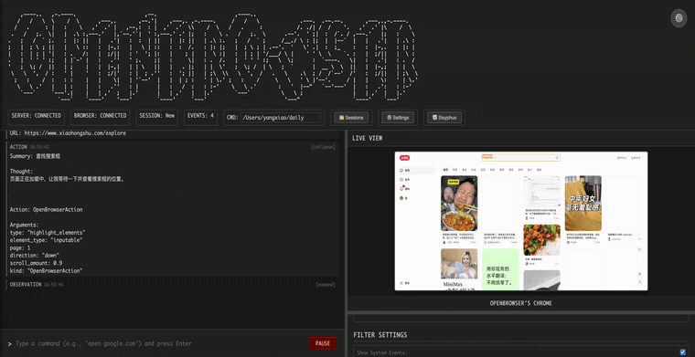

I like using AI agents to solve real problems. I am less interested in demo theater and more interested in systems that can be tested, compared, and improved. I want agent work to feel closer to engineering and science, and less like improvisation.
A multimodal browser agent I keep pushing toward practicality.
OpenBrowser currently has loading... stars on GitHub.
OpenBrowser is my attempt to build the browser AI agent solution I think the industry is still missing. Browsers are, in practice, one of the most complex systems in software. Their implementations are complicated, their interfaces are dynamic, and actually getting things done inside them is harder than it looks from the outside.
To me, the most native way to operate a browser is still the human way: perceive the page visually, then act through the interface with a mouse and keyboard. Current models are not yet good enough to operate directly from pixels without help, so there is still a lot of engineering work needed to support them. That is exactly the part I enjoy working on.
Many popular industry approaches, including PinchTab and OpenClaw Browser Relay, rely heavily on DOM text. That works well in many scenarios, and I do not dismiss it: given the current state of multimodal models, DOM-heavy methods can often be faster or more accurate than what I am doing. But I do not think understanding DOM is the same thing as truly being able to operate a page. My long-term bet is that the best browser agent will be multimodal, or at least a strong hybrid system.
A big part of the project is making those tradeoffs explicit. In the archived evaluation, I kept the same OpenClaw control setup and compared OpenClaw Browser Relay with OpenClaw using the OpenBrowser skill. I care about the whole picture: task success, execution time, price, and how much context headroom remains in the control layer.
I built my own evaluation environment for this, including mocked websites with realistic interactions, distractions, and event tracking. I use OpenBrowser every day; when I hit a bad case, I turn it into an evaluation set and optimize against it. I am especially interested in making lower-cost models like Qwen do real work, because I think cost will matter more and more over time.

A scientific approach to code-SQL visibility with AI agents.
SQLens captures an important thing I believe. I like vibe coding. I like AI agents. What I like even more is vibe coding organized by software engineering methods. To me, that is what SQLens is trying to do.
The paper, SQLens: Continuous Code-to-SQL Visibility in the Wild, was accepted to the 2026 SIGMOD Industrial Track. It is about using software engineering methods to organize what AI agents produce: extracting SQL knowledge from unstructured code, turning that into a bidirectional code-SQL index, and making the result usable in real engineering workflows. The details are in the paper, but the core idea is simple: agent output becomes much more valuable when it is structured, validated, and made durable.
I like useful systems more than flashy demos. I think evaluation matters. I think smaller, cheaper models deserve serious engineering. And I think AI agents become most interesting when they are grounded in real constraints and real work.